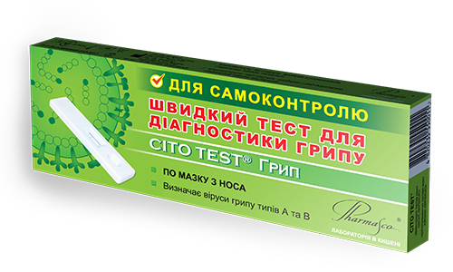
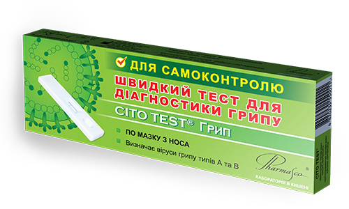

Самотестування НА COVID-19
Просто КУПИТИ. Просто ЗРОБИТИ. Просто ДІЗНАТИСЬ
CITO TEST® COVID-19 Ag
при перших симптомах та впродовж
першого тижня після їх появи

 

-
Швидко
результат за 15 хв
-
Зручно
проста процедура
тестування -
Доступно
тестування можна зробити
самостійно вдома або на роботі -
Cхвалено МОЗ
верифіковано лабораторним центром
МОЗ та схвалено до самотестування
Чому варто використовувати швидкі
тести для діагностики COVID-19?
Швидкі тести від компанії Фармаско допоможуть:
- Виявити збудника ГРВІ швидко в домашніх умовах або на підприємстві
- Знизити вартість тестування у порівнянні з лабораторними методами
діагностики - Зменшити потребу контактувати з великою кількістю людей у чергах
медичних закладів та лабораторій, а отже зменшити ризик зараження - Швидко звернутися до фахівців за допомогою і отримати відповідний
обсяг лікувальних, діагностичних і карантинно-обмежувальних заходів та розпочати
пошук контактних осіб
Який обрати тест?
Обираючи тест слід звернути увагу на наявність симптомів ГРВІ та їх тривалість.
Робіть правильний тест у правильний час!
-
CITO TEST® COVID-19 Ag

CITO TEST® COVID-19 Ag виявляє антигени
коронавірусу у мазках з носоглотки у осіб
з ознаками ГРВІ при перших симптомах та
протягом першого тижня після їх появиЦей тест для тебе, якщо:
Маєш симптоми ГРВІ
Симптоми тривають не довше 1 тижня
-
CITO TEST® Грип
CITO TEST® Грип виявляє антигени грипу типу А та типу
В у мазках з носа. Допомагає при перших симптомах
підтвердити грип А або В, своєчасно звернутися до
лікаря та вчасно отримати специфічну терапіюЦей тест для тебе, якщо:
Маєш симптоми ГРВІ
Симптоми тривають не довше 3 днів
-
CITO TEST® COVID-19

CITO TEST®COVID-19 виявляє наявність антитіл
до коронавірусу у крові. Допомагає виявити імунну
відповідь організму на вірус. Доцільно проводити з
2го тижня захворювання або з метою
встановленняЦей тест для тебе, якщо:
Маєш симптоми ГРВІ і вони тривають довше тижня
Симптомів не маєш, проте хочеш перевірити чи перехворів раніше
Що робити після отримання
результату?
Позитивний результат на наявність інфекції Covid-19.
При отриманні позитивного результату слід негайно самоізолюватися, щоб не інфікувати своїх
рідних та близьких, а також поінформувати всіх контактних осіб, щоб вони були більш уважними
до свого здоров’я; звернутися до лікаря або за телефоном гарячої лінії МОЗ України, щоб отримати
належну медичну допомогу, своєчасно вжити всіх необхідних санітарно-протиепідемічних заходів;
Негативні результати не виключають наявність інфекції Covid-19.
Найпоширенішими причинами хибнонегативних результатів є застосування тестів в неправильний
час, помилки при заборі зразку та низька концентрація вірусу або антитіл в зразку.